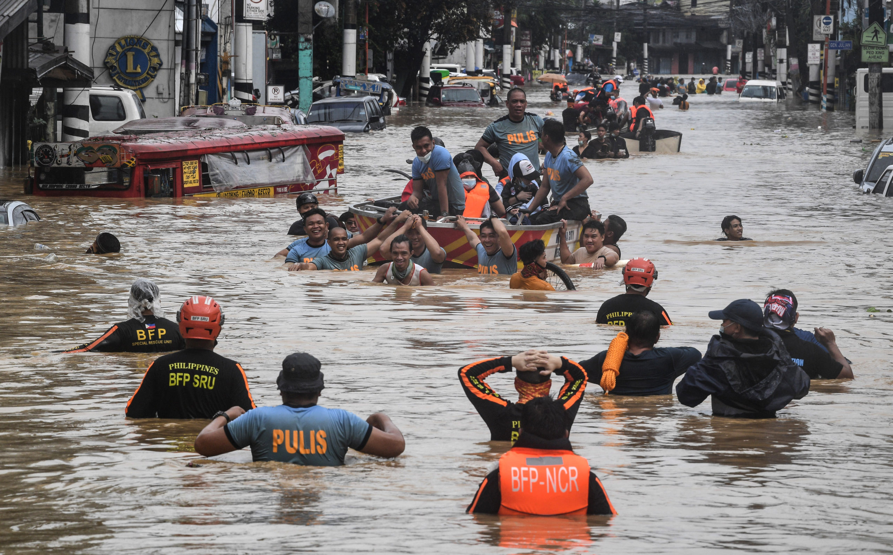

Understanding Floods

Floods are among the most common natural disasters around the world. They occur when water overflows onto land that is normally dry. Heavy rainfall, overflowing rivers, storms, cyclones and poor drainage can all contribute to flooding.
Floods can affect entire communities within a short period of time. Homes and roads may be damaged, electricity and communication systems may be disrupted, and people may be forced to leave their homes.
The effects of a flood can continue long after the water has receded. Communities may need clean drinking water, food, medical assistance and temporary shelter while they begin the process of recovery.